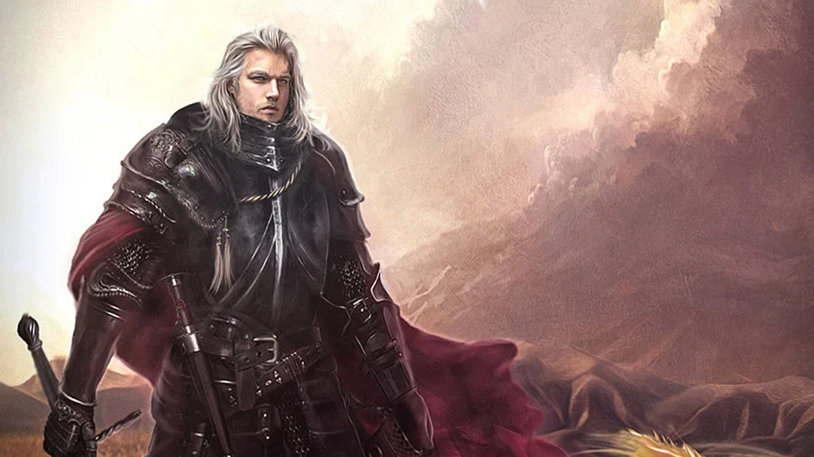
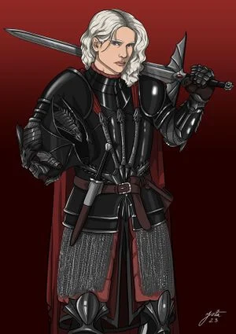
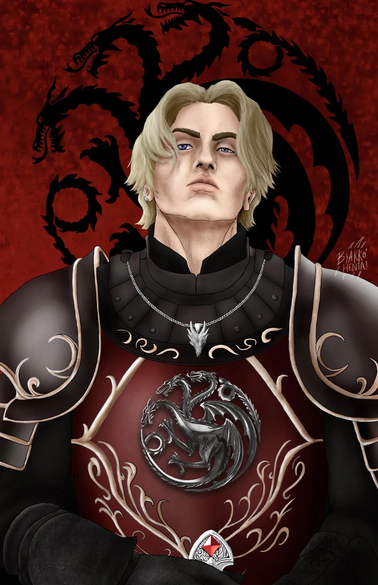

After the death of king Viserys II his son Aegon IV (Aegon the Unworthy) ascended the Throne,reigning for 12 years from 172 AC to 184 AC. The maesters described him with numerous extramarital affairs. He reportedly claimed to have slept with 900 women and was indifferent to governing the state. There were 9 women known as Aegon's 9 mistresses but the most influential mistresses were Daena targaryen the mother of Deamon Blackfyre and Barba Bracken the mother of Aegro Rivers and Melissa Blackwood the mother of Brynden Rivers. Deamon Blackfyre was born in 170 AC and was originally called Deamon Waters because he was bastard. He was trained at the RedKeep by the most skilled and important swordsmen, including Quentin Bull (Fire Ball). Deamon participated in the Tournament of the Squires at the age of 12 and won with formidable performance, He was then knighted by the king and given the legendry Valyrian steel sword Blackfyre. and Aegon gave it not to his true heir prince Daeron targaryen but to his bastrad son deamon, and from that day deamon took the name deamon Blackfyre. Before the king died on his deathbed he legitmized all his bastards a perfect recipe for future conflict. Deron rushed from Dragonstone to King's Landing, was proclaimed king of the seven kingdoms, and arranged the marriage of Deamon Blackfyre and Rohnain Tyreish and gave him his owe land


